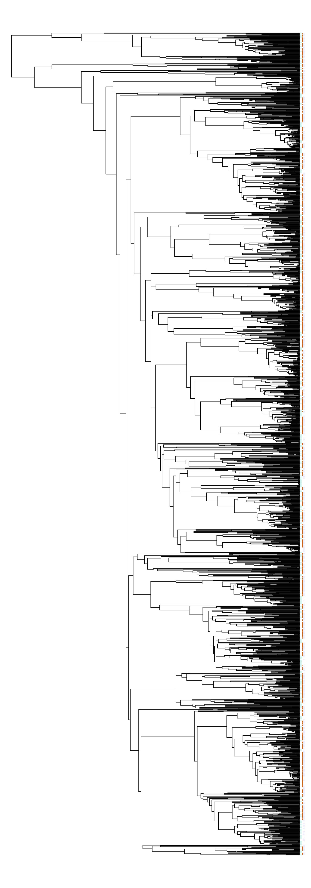

Phylogenetic community assembly with the Fish Tree of Life
Jonathan Chang
Source:vignettes/community-analysis.Rmd
community-analysis.RmdHere’s a quick example to show how we could use the
fishtree package to conduct some phylogenetic community
analyses. First, we load fishtree and ensure that the other
packages that we need are installed.
library(ape)
library(fishtree)
loadNamespace("rfishbase")
#> <environment: namespace:rfishbase>
loadNamespace("picante")
#> <environment: namespace:picante>
loadNamespace("geiger")
#> <environment: namespace:geiger>Next we’ll start downloading some data from rfishbase.
We’ll be seeing if reef-associated ray-finned fish species are clustered
or overdispersed in the Atlantic, Pacific, and Indian Oceans.
# Get reef-associated species from the `species` table
reef_species <- rfishbase::species(fields = c("Species", "DemersPelag"))
#> Joining, by = c("Subfamily", "GenCode", "FamCode")
#> Joining, by = "FamCode"
#> Joining, by = c("Order", "Ordnum", "Class", "ClassNum")
#> Joining, by = c("Class", "ClassNum")
reef_species <- reef_species[reef_species$DemersPelag == "reef-associated", ]
# Get native and endemic species from the Atlantic, Pacific, and Indian Oceans
eco <- rfishbase::ecosystem(species_list = reef_species$Species)
#> Joining, by = c("Subfamily", "GenCode", "FamCode")
#> Joining, by = "FamCode"
#> Joining, by = c("Order", "Ordnum", "Class", "ClassNum")
#> Joining, by = c("Class", "ClassNum")
valid_idx <- eco$Status %in% c("native", "endemic") & eco$EcosystemName %in% c("Atlantic Ocean", "Pacific Ocean", "Indian Ocean")
eco <- eco[valid_idx, c("Species", "EcosystemName")]
# Retrieve the phylogeny of only native reef species across all three oceans.
phy <- fishtree_phylogeny(species = eco$Species)
#> Warning: Requested 5867 but only found 3938 species.
#> • Abudefduf conformis
#> • Abudefduf natalensis
#> • Abudefduf nigrimargo
#> • Acanthaluteres brownii
#> • Acanthanectes rufus
#> • ...and 1924 othersWe’ll have to clean up the data in a few ways before sending it to
picante for analysis. First, we’ll need to convert our
species-by-site data frame into a presence-absence matrix. We’ll use
base::table for this, and use unclass to
convert the table into a standard matrix
object.
sample_matrix <- unclass(table(eco))
dimnames(sample_matrix)$Species <- gsub(" ", "_", dimnames(sample_matrix)$Species, fixed = TRUE)Next, we’ll use geiger::name.check to ensure the tip
labels of the phylogeny and the rows of the data matrix match each
other.
nc <- geiger::name.check(phy, sample_matrix)
sample_matrix <- sample_matrix[!rownames(sample_matrix) %in% nc$data_not_tree, ]Finally, we’ll generate the cophenetic matrix based on the phylogeny,
and transpose the presence-absence matrix since picante
likes its columns to be species and its rows to be sites.
cophen <- cophenetic(phy)
sample_matrix <- t(sample_matrix)We’ll run picante::ses.mpd and
picante::ses.mntd with only 100 iterations, to speed up the
analysis. For a real analysis you would likely increase this to 1000,
and possibly test other null models if your datasets have e.g.,
abundance information.
picante::ses.mpd(sample_matrix, cophen, null.model = "taxa.labels", runs = 99)
#> ntaxa mpd.obs mpd.rand.mean mpd.rand.sd mpd.obs.rank mpd.obs.z
#> Atlantic Ocean 612 238.0090 231.7364 2.2620469 100 2.7729564
#> Indian Ocean 1207 233.2275 231.7402 1.1100900 94 1.3398163
#> Pacific Ocean 1487 231.7967 231.6521 0.8745781 60 0.1653483
#> mpd.obs.p runs
#> Atlantic Ocean 1.00 99
#> Indian Ocean 0.94 99
#> Pacific Ocean 0.60 99
picante::ses.mntd(sample_matrix, cophen, null.model = "taxa.labels", runs = 99)
#> ntaxa mntd.obs mntd.rand.mean mntd.rand.sd mntd.obs.rank
#> Atlantic Ocean 612 41.91627 48.63626 1.4339679 1
#> Indian Ocean 1207 34.95466 37.88575 0.6994097 1
#> Pacific Ocean 1487 34.20019 35.03996 0.4671561 4
#> mntd.obs.z mntd.obs.p runs
#> Atlantic Ocean -4.686288 0.01 99
#> Indian Ocean -4.190809 0.01 99
#> Pacific Ocean -1.797610 0.04 99The Atlantic and Indian Oceans are overdispersed using the MPD metric, and all three oceans are clustered under the MNTD metric. MPD is thought to be more sensitive to patterns closer to the root of the tree, while MNTD is thought to more closely reflect patterns towards the tips of the phylogeny.
We can confirm these patterns visually by running the following code, which will plot the phylogeny and add colored dots (red, green, and blue) to indicate whether a tip is associated with a specific ocean basin.
plot(phy, show.tip.label = FALSE, no.margin = TRUE)
obj <- get("last_plot.phylo", .PlotPhyloEnv)
matr <- t(sample_matrix)[phy$tip.label, ]
xx <- obj$xx[1:obj$Ntip]
yy <- obj$yy[1:obj$Ntip]
cols <- c("#1b9e77", "#d95f02", "#7570b3")
for (ii in 1:ncol(matr)) {
present_idx <- matr[, ii] == 1
points(xx[present_idx] + ii, yy[present_idx], col = cols[ii], cex = 0.1)
}